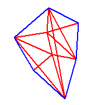

Silhouette.h
The boundary curve of the projection is the silhouette. The corresponding polyline on the polyhedron is the terminator. The image shows the projection of a cube (very wide angle of view).
|  |
|
Perspective projection of a convex polyhedron: Silhouette.h The boundary curve of the projection is the silhouette. The corresponding polyline on the polyhedron is the terminator. The image shows the projection of a cube (very wide angle of view).
|